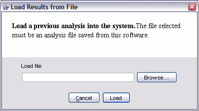

You can save an analysis you did and load it again later.
These capabilities are accessed in the main window using the "Analysis" menu.
Saving:
Once you have saved an analysis, you can load it back in:
